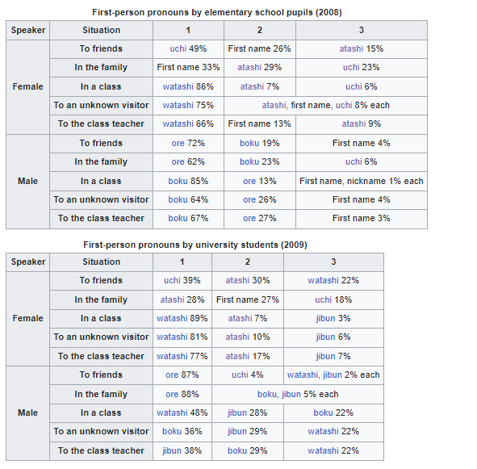

Language Cool Things
hello I
am learning multiple languages as well as interested in language things...
languages what have their own pages and inf
oes...
... .
japanese
I anjoy a lot about this language... JApanese pronouns./... so many!
Epic things about this!..

Also, I really, really,
really
love variant or obscure forms of kana... Ye, Yi, We, Wi, Wu and all Hendaigana need the recognition
What they deserV!